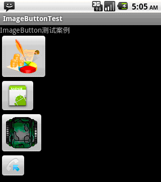

Android ImageButton(带图标的按钮)
除了Android系统自带的Button按钮一万，还提供了带图标的按钮ImageButton
要制作带图标的按钮，首先要在布局文件中定义ImageButton，然后通过setImageDrawable方法来设置要显示的图标。
注意：
我们可以在布局文件中就直接设置按钮的图标，如android:src="@drawable/icon1"
我们也可以在程序中设置自定义图标
imgbtn3.setImageDrawable(getResources().getDrawable(R.drawable.icon2));
我们还可以使用系统自带的图标
imgbtn4.setImageDrawable(getResources().getDrawable(android.R.drawable.sym_call_incoming));
设置完按钮的图标后，需要为按钮设置监听setOnClickListener，以此捕获事件并处理
下面的例子讲述的是由4个图标按钮组成的布局，其中三个按钮的图标是自定义的，第四个按钮的图标是系统的，当点击按钮1的时候，弹出dialog，当点击按钮2的时候，点击确定后，可以将按钮2的图标变成按钮3的图标，当点击按钮3的时候，按钮3的图标变成了系统打电话的图标，点击按钮4，显示一个提示dialog
import android.app.Activity;import android.app.AlertDialog;
import android.app.Dialog;
import android.content.DialogInterface;
import android.os.Bundle;
import android.view.View;
import android.widget.Button;
import android.widget.ImageButton;
import android.widget.TextView;
public class ImageButtonTest extends Activity {
/** Called when the activity is first created. */
TextView textview;
ImageButton imgbtn1;
ImageButton imgbtn2;
ImageButton imgbtn3;
ImageButton imgbtn4;
@Override
public void onCreate(Bundle savedInstanceState) {
super.onCreate(savedInstanceState);
setContentView(R.layout.main);
textview = (TextView) findViewById(R.id.textview);
// 分别取得4个ImageButton对象
imgbtn1 = (ImageButton) findViewById(R.id.imagebutton1);
imgbtn2 = (ImageButton) findViewById(R.id.imagebutton2);
imgbtn3 = (ImageButton) findViewById(R.id.imagebutton3);
imgbtn4 = (ImageButton) findViewById(R.id.imagebutton4);
// 分别为ImageButton设置图标
// imgbtn1已经在main.xml布局中设置了图标，所以就不在这里设置了（设置图标即可在程序中设置，也可在布局文件中设置）
imgbtn2.setImageDrawable(getResources().getDrawable(R.drawable.icon));// 在程序中设置图标
imgbtn3.setImageDrawable(getResources().getDrawable(R.drawable.icon2));
imgbtn4.setImageDrawable(getResources().getDrawable(
android.R.drawable.sym_call_incoming));// 设置系统图标
// 下面为各个按钮设置事件监听
imgbtn1.setOnClickListener(new Button.OnClickListener() {
@Override
public void onClick(View v) {
// TODO Auto-generated method stub
Dialog dialog = new AlertDialog.Builder(ImageButtonTest.this)
.setTitle("提示")
.setMessage("我是ImageButton1")
.setPositiveButton("确定",
new DialogInterface.OnClickListener() {
@Override
public void onClick(DialogInterface dialog,
int which) {
// 相应的处理操作
}
}).create();
dialog.show();
}
});
imgbtn2.setOnClickListener(new Button.OnClickListener() {
@Override
public void onClick(View v) {
Dialog dialog = new AlertDialog.Builder(ImageButtonTest.this)
.setTitle("提示")
.setMessage("我是ImageButton2，我要使用ImageButton3的图标")
.setPositiveButton("确定",
new DialogInterface.OnClickListener() {
@Override
public void onClick(DialogInterface dialog,
int which) {
imgbtn2.setImageDrawable(getResources()
.getDrawable(R.drawable.icon2));
}
}).create();
dialog.show();
}
});
imgbtn3.setOnClickListener(new Button.OnClickListener() {
@Override
public void onClick(View v) {
Dialog dialog = new AlertDialog.Builder(ImageButtonTest.this)
.setTitle("提示")
.setMessage("我是ImageButton3，我想使用系统打电话的图标")
.setPositiveButton("确定",
new DialogInterface.OnClickListener() {
@Override
public void onClick(DialogInterface dialog,
int which) {
imgbtn3.setImageDrawable(getResources()
.getDrawable(
android.R.drawable.sym_action_call));
}
}).create();
dialog.show();
}
});
imgbtn4.setOnClickListener(new Button.OnClickListener() {
@Override
public void onClick(View v) {
Dialog dialog = new AlertDialog.Builder(ImageButtonTest.this)
.setTitle("提示")
.setMessage("我是使用的系统图标")
.setPositiveButton("确定",
new DialogInterface.OnClickListener() {
@Override
public void onClick(DialogInterface dialog,
int which) {
// 相应的处理操作
}
}).create();
dialog.show();
}
});
}
}
XML如下：
<?xml version="1.0" encoding="utf-8"?><LinearLayout xmlns:android="http://schemas.android.com/apk/res/android
android:layout_width="fill_parent
android:layout_height="fill_parent
android:orientation="vertical" >
<TextView
android:id="@+id/textview
android:layout_width="fill_parent
android:layout_height="wrap_content
android:text="ImageButton???????" />
<ImageButton
android:id="@+id/imagebutton1
android:layout_width="wrap_content
android:layout_height="wrap_content
android:src="@drawable/icon1" />
<ImageButton
android:id="@+id/imagebutton2
android:layout_width="wrap_content
android:layout_height="wrap_content" />
<ImageButton
android:id="@+id/imagebutton3
android:layout_width="wrap_content
android:layout_height="wrap_content" />
<ImageButton
android:id="@+id/imagebutton4
android:layout_width="wrap_content
android:layout_height="wrap_content" />
</LinearLayout>
